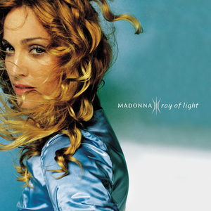
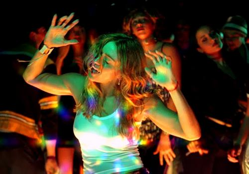
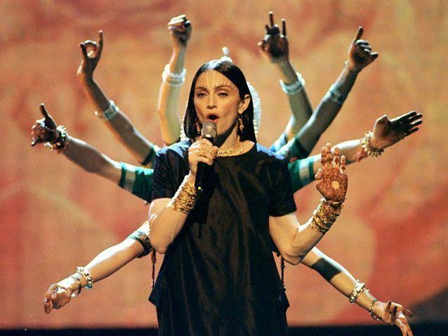
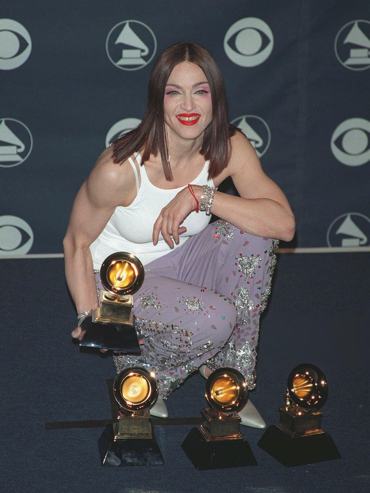

Ray of Light es el séptimo álbum de estudio de Madonna. Lanzado a la venta en 1998, fue el primer álbum de la Reina del Pop en 4 años y también el primero desde que dio a luz a su primera hija, Lourdes Leon (su principal musa para este proyecto). En este álbum, Madonna trabajó con el productor William Orbit y optaron por un sonido electrónico innovador que toma elementos de trip-hop, techno, pop, dance y ambient. Temáticamente aborda principalmente la maternidad, el desamor y la espiritualidad. Durante esta época Madonna se adentró en el cábala, una corriente espiritual derivada del judaísmo. La estética de la era se influenció en esta corriente y también en elementos orientales. Por otro lado, el álbum tuvo críticas excelentes y es el disco más aclamado de la carrera de la Reina del Pop. Ray of Light también ganó 4 GRAMMYs y es el único álbum de Madonna en haber sido nominado al Álbum del Año. Además, ha servido de inspiración para artistas como: Adele, FKA twigs y Addison Rae. Comercialmente, Ray of Light tuvo una recepción positiva y "Frozen" estuvo muy cerca de llegar a la cima del Billboard Hot 100 al alcanzar el puesto #2, mientras que "Ray of Light" alcanzó el #5 y "The Power of Good-Bye" llegó al #11. El álbum debutó en el #2 del Billboard 200 de E.E.U.U.

Madonna en el emblemático video musical de "Ray of Light".

Madonna interpretando la canción "Shanti / Ashtangi" en los VMAs de 1998.

Madonna arrasando en los GRAMMYs de 1999.